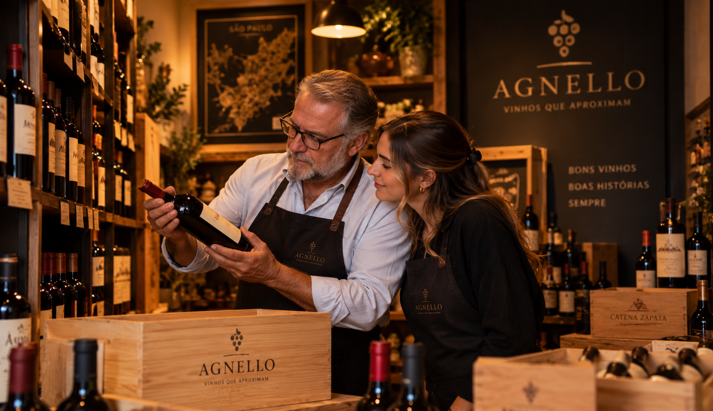

Há mais de 15 anos, a Vinharia Agnello faz parte da história do vinho em São Paulo. Nascida de uma empresa familiar, a Agnello sempre teve como propósito aproximar as pessoas do universo dos vinhos. Sob a condução de Giulio e sua filha Bianca, a vinheria construiu sua identidade através de uma seleção de rótulos nacionais e internacionais e, principalmente, através da relação próxima com seus clientes.

Na Agnello, escolher um vinho nunca foi apenas olhar para uma garrafa. É descobrir novas possibilidades, conhecer uma uva, uma região, uma vinícola e entender como cada escolha pode combinar com diferentes sabores e momentos. Esse cuidado também está presente na forma como os vinhos são tratados. Afinal, cada garrafa carrega características que podem ser afetadas pela maneira como é armazenada.Por isso, o cuidado com temperatura, luz e movimentação faz parte da atenção dedicada aos rótulos. Com o passar dos anos, o mundo mudou — e a maneira de comprar também. A pandemia trouxe novos desafios para a Agnello e fez com que muitos clientes passassem a buscar suas compras pela internet. Para uma vinheria que sempre valorizou o contato pessoal, surgiu uma pergunta importante: como levar para o ambiente digital a mesma proximidade que existe dentro da loja? Foi desse desafio que nasceu uma nova etapa da história da Agnello. A tradição permaneceu, mas ganhou um novo caminho. A tecnologia passou a ser uma forma de aproximar ainda mais a vinheria de seus clientes, levando conhecimento, descobertas e a experiência de escolher um vinho para além do espaço físico. A Agnello continua acreditando que cada vinho tem uma história. E que cada pessoa também tem um momento para descobrir o seu.